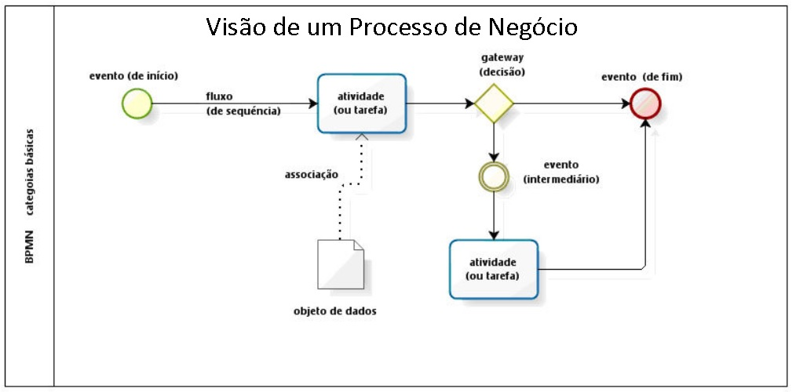
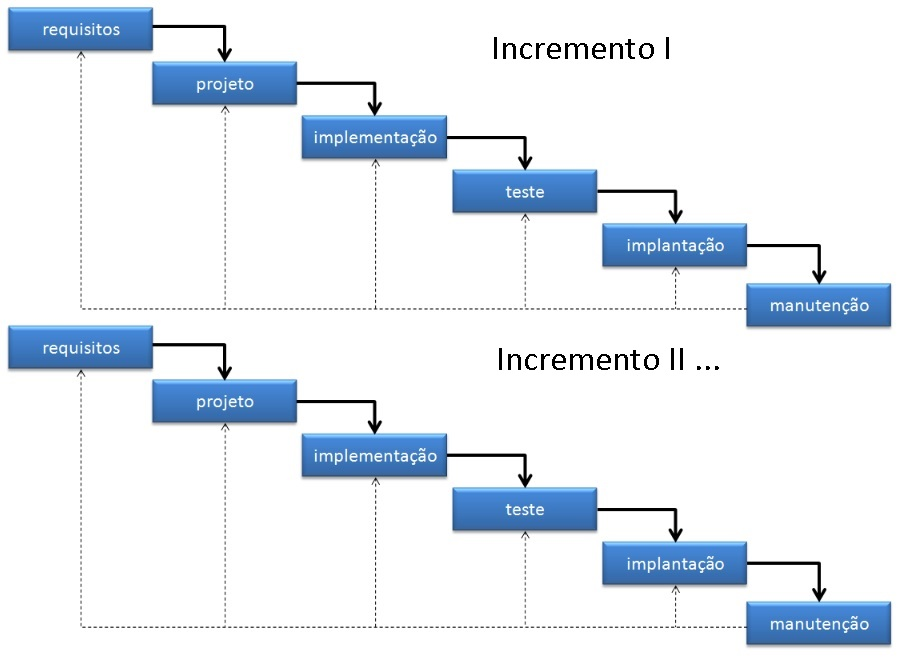

Aula 2 PROCESSO DE SOFTWARE
2.1 CONCEITO DE PROCESSO, ATIVIDADES E TAREFAS
No mundo dos negócios como é conceituado um processo mapeado ?

Um PROCESSO é um conjunto de atividades que são executadas para atingir um objetivo (Business Process Model and Notation - BPMN)
ATIVIDADES são os trabalhos que devem ser realizados para que um processo seja executado (Business Process Model and Notation - BPMN)
TAREFAS são decomposições de atividades e representam um conjunto de passos ou ações executadas para realizar um trabalho. Essas tarefas logicamente relacionadas quando encadeadas completam a atividade. (Business Process Model and Notation - BPMN)
2.2 O PROCESSO DE SOFTWARE
PROCESSO DE SOFTWARE é uma metodologia que define as atividades necessárias para desenvolver um software de qualidade (Roger S Pressman)
PROCESSO DE SOFTWARE é um conjunto de atividades que visam a produção de um software (Ian Sommerville)
2.3 ATIVIDADES FUNDAMENTAIS DE UM PROCESSO DE SOFTWARE
POR QUAIS ATIVIDADES VOCÊ (NECESSÁRIAMENTE) PASSA ?
| ATIVIDADE #1 | ATIVIDADE #2 | ATIVIDADE #3 | ATIVIDADE #4 | ATIVIDADE #5 |
|---|---|---|---|---|
| comunicação | planejamento | modelagem | construção | entrega |
| ATIVIDADE #1 | ATIVIDADE #2 | ATIVIDADE #3 | ATIVIDADE #4 | ATIVIDADE #5 |
|---|---|---|---|---|
| especificação | projeto | implementação | validação | evolução |
2.4 MODELOS DE PROCESSO DE SOFTWARE CLÁSSICOS
COMO VOCÊ PASSA POR ESSAS ATIVIDADES ?
2.4.1 ABORDAGEM CASCATA

2.4.1.1 VANTAGENS DESSE MODELO
| Vantagem | Descrição | Exemplo |
| Simplicidade |
|
|
| Documentação |
|
|
| Controle |
|
|
| Adequado para projetos estáveis |
|
2.4.1.2 DESVANTAGENS DESSE MODELO
| Desvantagem | Descrição | Exemplos |
| Inflexibilidade |
|
Se o projeto é feito em um produto comercial (biblioteca) e ela deixa de ser suportada pelo fabricante, o projeto vai ter que nascer com uma tecnologia morta; Seu projeto nasceu no skype, não vai poder migrar para o teams no meio da construção; |
| Feedback tardio |
|
O cliente iniciou um projeto de aplicativo na plataforma ANDROID. Durante o desenvolvimento o cliente que o aplicativo rode em plataforma IOS (iPHONE). Não é possível, mesmo que o cliente tenha um pequeno montante de dinheiro para investir; |
| Longos prazos |
|
Você definiu o prazo de entrega em 6 meses, mas devido a rotatividade de funcionários, seu projeto atrasou 3 meses; Os funcionários de equipes de etapas dependentes ficam ociosos naquele projeto; |
| Risco de insucesso | Falta de flexibilidade e feedback tardio podem aumentar o risco de o projeto não atender às expectativas do cliente ou às necessidades do mercado. | O cliente do estacionamento comprou um sistema ERP para uma loja de calçados; O sistema foi desenhado para cadastrar calçados; Contudo a loja é uma magazine e o cliente durante o projeto começou a vender roupas; O cadastro de mercadorias não suporta roupas; O cliente só descobriu a falta de suporte no momento da entrega do software; |
2.4.2 ABORDAGEM INCREMENTAL

2.4.2.1 VANTAGENS DESSE MODELO
| Vantagem | Descrição | |
| Entrega antecipada de software funcional |
|
|
| Melhor gerenciamento de riscos |
|
|
| Flexibilidade para mudanças |
|
|
| Feedback contínuo do cliente |
|
|
| Melhor aproveitamento de recursos |
|
2.4.2.2 DESVANTAGENS DESSE MODELO
| Desvantagem | Descrição | |
| Requisitos bem definidos |
|
Um software foi projetado para ter frontend em janelas e computadores; No primeiro incremento o cliente resolve que é melhor acrescentar suporte a WEB (frontend no navegador); No segundo incremento o cliente resolve que o software deve ter suporte a frontend de dispositivos móveis (app); |
| Planejamento cuidadoso |
|
O time de Planejamento definou que o software seria no code e seria feito em plataforma Buble (onde o Banco de dados é interno da solução). Surgiu a necessidade de integração com outros bancos de dados pré-existentes de terceiros. Precisa mudar a solução para WeWEB. Surgiu a necessidade de inserir gateway de pagamento. Melhor migrar o projeto para python e FLASK; |
| Integração dos incrementos |
|
Seu sistema gera um relatório de uso de veículos da empresa por funcionários; Você vai construir banco de dados próprio, mas precisa acessar a base de dados do RH e a base de dados da Gerencia de Materiais da empresa; O acesso da tabela depende de aprovação das áreas; Seu sistema não anda enquanto dos outrso bancos não sair; |
| Necessidade de equipe experiente |
|
Tanto na atividade de planejamento quanto na de execução, Equipe de frontend precisa de informações de APIs da equipe de backend; Equipe de backend precisa de acessos a fontes de dados externas, caso seja necessário; |